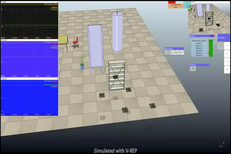
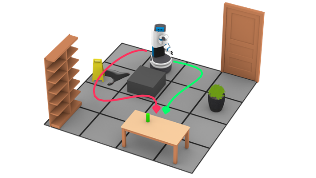
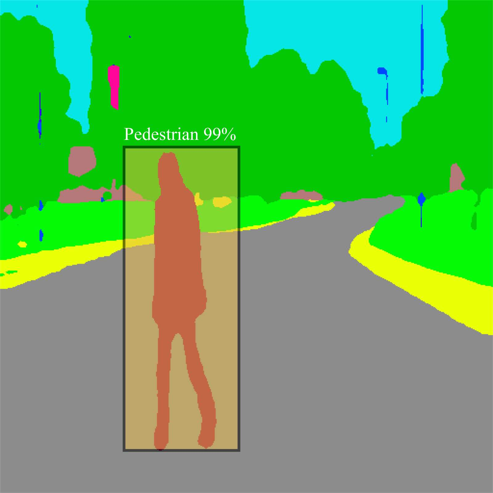
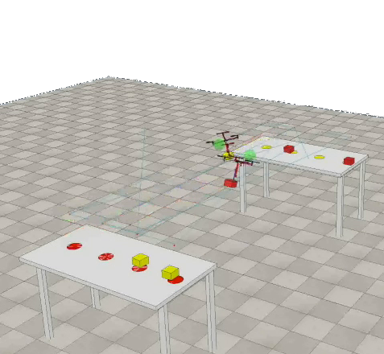

Work Experience
PostDoc / North Carolina Agricultural and Technical State University
May 2020 - Current
- Written several grant proposals
- Research focus on Formal Method, Deep Learning, Multi-Agent System
- Developed and implemented several deep learning based pedestrian detection and tracking methods.
- Developed test-bed for self-driving cars.
- Developed and implemented Mixed Integer Linear Programming based Multi-agent motion planners.
PostDoc / Rice University
April 2018 - April 2020
- Research focus on Formal Method, Machine Learning, Robot programming
- Designed and implemented scalable motion planning algorithms.
- Theoretical analysis of proposed algorithms.
- Demonstrated algorithms on a real robot.
PostDoc / Nagoya University
April 2017 - February 2018
- Designed machine learning framework for anomaly detection of autonomous cars.
- Implemented deep learning algorithms for anomaly detection.
- Analyzing human driving behavior pattern utilizing developed algorithms.
Researcher / Japan Advanced Institute of Science and Technology
April 2012 - March 2017
- Designed and implemented path and motion planning algorithms for Unmanned Aerial Vehicles (UAVs).
- Developed sensor fusion based localization system of UAVs in indoor GPS-denied environment.
- Implemented several realistic simulations in a physics-based simulator.
- Real-world demonstration of developed algorithms on a flying robot.
Exchange Student / Seoul National University
January 2013 - March 2013
- Designed controllers for underdamped systems such as quadrotors.
- Studied MATLAB, LabView for modeling and simulation of quadrotors.
Education
Japan Advanced Institute of Science and Technology (JAIST)
April 2014- March 2017
Doctoral Degree in Information Science
Japan Advanced Institute of Science and Technology (JAIST)
April 2012-March 2014
Master Degree in Information Science
Rajshahi University of Engineering & Technology (RUET)
February 2007-August 2011
Bachelor Degree in Mechanical Engineering
Research
My research interests lie in the areas of Artificial Intelligence, Robotics, Machine Learning, Deep Learning, and Cyber-Physical Systems. My research balances both theory and practical implementations, with an emphasis on developing elegant, scalable, theoretically sound algorithms for solving real-world robotics applications. Below is a breakdown of my doctoral and postdoctoral research experiences.
Environmental Monitoring using Unmanned Systems
My doctoral research was focused on developing unmanned autonomous robotic systems that can contribute greatly to search-and-rescue missions, and can also be used for environmental monitoring purposes.  My doctoral dissertation was a study of UAV-based Topographic Mapping and Source Localization of the Radiation Field. This dissertation seeks to address methodological shortcomings in the current empirical research on source localization of the radiation field. In the radiation field monitoring problem, measurements of the field are spatially distributed throughout the target area. Given a target area, estimating the source positions is what is commonly known as a source localization problem. One of the straightforward approaches is to find the location where the measurement is significantly higher than the others. However, in the radiation field, if the cumulative radiating effect of sources exists, the field turns out to be complex to estimate, and the sources are no longer at the center of each distribution. Accordingly, the hotspot, where the radiation intensity is maximum, does not coincide with the positions of sources. From the robot's point of view, the measurement is one pixel and must gather at the expense of exploration. When the environment is unknown, the robot needs to measure the field by exploring which location is interesting and which is not. Robots operating under such conditions have to tackle the problem of deciding where to go to get the most relevant information. Therefore, we propose an efficient exploration method to quickly localize the radiation sources using the following procedures: 1) Region of Interest (ROI) determination utilizing topographic maps with specific radiation level selection methods and 2) source localization estimating the number of sources and their positions with Variational Bayes inference of Gaussian mixtures For real-world implementation, we developed autonomous vision-based UAV navigation for a GPS-denied environment.
Planning under Uncertainties for Safety-critical Systems
In classical behavior planning algorithms assume that all the elements of an environment are known to compute the solution before ever actually executing an action in the environment. Unfortunately, uncertainty is an unavoidable part of any autonomous system that precludes agents from being able to plan a solution in advance.  To deal with uncertainties, part of my research activities aimed at leveraging interactive learning and data-driven prediction to synthesize optimal policies with cost and energy constraints in dynamic environments. Autonomous robots operating in uncertain domains often face tasks with both Boolean qualitative requirements (such as reaching a goal location safely) and optimality criteria (such as reaching the goal as fast as possible). These problems can be modeled as Partially Observable Markov Decision Processes (POMDPs) with quantitative and qualitative objectives. In this work, we study this problem for the special case of safe-reachability objectives, which require that with a probability above a threshold, a goal state is eventually reached while keeping the probability of visiting unsafe states below a different threshold. We present an online scalable policy synthesis framework for POMDPs with safe-reachability objectives. We also offer a theoretical analysis of this framework and evaluate our framework through real-robot experiments.
Vision-based Perception Systems for Autonomous Cars
The advent of autonomous driving technologies would lead to vehicles with different levels of autonomy equipped with Advanced Driver Assistance Systems (ADAS), in which automatically identifying pedestrians will be a crucial safety requirement.  An important extension of my research is to develop an efficient and robust deep learning-based perception system that facilitates the vision-based planning modules. In particular, my research focuses on real-time accurate pedestrian detection and tracking to ensure safety and reliability in autonomous driving. Pedestrian detection is a notoriously hard problem and particularly challenging due to the fact that pedestrians may appear in various poses, clothing, and articulations of body parts. Likewise, pedestrians can be found mostly in urban areas where the background texture form a highly cluttered environment. We investigate multi-modal sensor data, joint evaluation of inferences from anchor box and semantic segmentation networks, and body parts to detect and track pedestrians accurately and robustly. In addition to the pedestrian detection problem, I also worked on modeling driving behavior using deep learning algorithms when I was a Post-Doctoral Researcher at Nagoya University. My specific interest was in the Generative Adversarial Networks (GANs) which is a semi-supervised machine learning algorithm. Specifically, I was focusing on developing the ability of self-driving or autonomous cars to detect anomalous driving behavior with generative adversarial networks (GANs)
Efficient Tasking and Coordination for Multi-Agent Systems
In many scenarios, it is important to deploy a team of mobile robots as a sensing platform to accomplish complex missions such as smart farming, environmental monitoring, etc.  Monitoring, surveying, or search-and-rescuing using the multi-robot system, however, can be a technical challenge because this problem demands an efficient tasking and coordination mechanism. My research activities in multi-agent systems focus on developing an integrated task and coordination mechanism to monitor an area of interest while incorporating the physical and sensing constraints of heterogeneous robots as well as satisfying measurement quality requirements. My current research at NCAT primarily focuses on Multi-agent System applications and enabling capabilities. In particular, we are interested in monitoring environmental phenomena, such as nuclear radiation, greenhouse gas emission, soil parameters in precision agriculture, traffic incidents. These phenomena are generally referred to as spatiotemporal fields which have high variability in both time and space. Unlike a single robot system, a multi-robot system presents an efficient, faster solution to the problem of understanding unknown spatiotemporal fields. Besides surveillance and monitoring, we also investigate safety and reachability requirements in dynamic adversarial environments when little or no information about the dynamics and intentions of the adversarial objects is available.
Publication
Journal Articles
| [1] | Abdullah Al Redwan Newaz, Tauhidul Alam, Murad Reis Gregory, Leonardo Bobadilla, and Ryan N Smith. Long-term autonomy for AUVs operating under uncertainties in dynamic marine environments. IEEE Robotics and Automation Letters, 6(4):6313 -- 6320, 2021. [ bib ] |
| [2] | Laya Shamgah, Tadewos G. Tadewos, Abdullah Al Redwan Newaz, Ali Karimoddini, and Albert C. Esterline. Reactive symbolic planning and control in dynamic adversarial environments. IEEE Transactions on Automatic Control, 2021. [ bib ] |
| [3] | Yue Wang, Abdullah Al Redwan Newaz, Juan David Hernández, Swarat Chaudhuri, and Lydia E Kavraki. Online partial conditional plan synthesis for POMDPs with safe-reachability objectives: Methods and experiments. IEEE Transactions on Automation Science and Engineering, 18(3):932 -- 945, 2021. (Equally contributed). [ bib ] |
| [4] | Tauhidul Alam, Abdullah Al Redwan Newaz, Leonardo Bobadilla, Wesam H Alsabban, Ryan N Smith, and Ali Karimoddini. Towards energy-aware feedback planning for long-range autonomous underwater vehicles. Frontiers in Robotics and AI, 8:7, 2021. (Equally contributed). [ bib ] |
| [5] | Nantawat Pinkam, Abdullah Al Redwan Newaz, Sungmoon Jeong, and Nak Young Chong. Rapid coverage of regions of interest for environmental monitoring. Intelligent Service Robotics, 12(4):393--406, 2019. [ bib ] |
| [6] | Abdullah Al Redwan Newaz, Sungmoon Jeong, and Nak Young Chong. Online boundary estimation in partially observable environments using a UAV. Journal of Intelligent and Robotic Systems, 90(3):505--514, 2018. [ bib ] |
| [7] | Abdullah Al Redwan Newaz, Sungmoon Jeong, Hosun Lee, Hyejeong Ryu, and Nak Young Chong. UAV-based multiple source localization and contour mapping of radiation fields. Robotics and Autonomous Systems, 85:12--25, 2016. [ bib ] |
Conference Papers
| [1] | Abdullah Al Redwan Newaz, Tauhidul Alam, Joseph Mondello, Jonathan Johnson, and Leonardo Bobadilla. Multi-robot information gathering subject to resource constraints. IEEE International Conference on Robot and Human Interactive Communication, pages 1--6, 2021. [ bib ] |
| [2] | Muhammad Mobaidul Islam, Abdullah Al Redwan Newaz, and Ali Karimoddini. A pedestrian detection and tracking framework for autonomous cars: Efficient fusion of camera and LiDAR data. In IEEE International Conference on Systems, Man, and Cybernetics, 2021. [ bib ] |
| [3] | Muhammad Mobaidul Islam, Abdullah Al Redwan Newaz, Renran Tian, Abdollah Homaifar, and Ali Karimoddini. A computationally effective pedestrian detection using constrained fusion with body parts for autonomous driving. In IEEE International Conference on Robotic Computing, 2021. [ bib ] |
| [4] | Abdullah Al Redwan Newaz and Tauhidul Alam. Hierarchical task and motion planning through deep reinforcement learning. In IEEE International Conference on Robotic Computing, 2021. [ bib ] |
| [5] | Muhammad Mobaidul Islam, Abdullah Al Redwan Newaz, Balakrishna Gokaraju, and Ali Karimoddini. Pedestrian detection for autonomous cars: Occlusion handling by classifying body parts. In IEEE International Conference on Systems, Man, and Cybernetics, pages 1433--1438, 2020. [ bib ] |
| [6] | Abdullah Al Redwan Newaz, Swarat Chaudhuri, and Lydia E Kavraki. Monte-Carlo policy synthesis in POMDPs with quantitative and qualitative objectives. Robotics: Science and Systems, 2019. [ bib ] |
| [7] | Abdullah Al Redwan Newaz, Sungmoon Jeong, Hosun Lee, Hyejeong Ryu, Nak Young Chong, and Matthew T Mason. Fast radiation mapping and multiple source localization using topographic contour map and incremental density estimation. In IEEE International Conference on Robotics and Automation, pages 1515--1521, 2016. [ bib ] |
| [8] | Abdullah Al Redwan Newaz, Sungmoon Jeong, and Nak Young Chong. Fast radioactive hotspot localization using a UAV. In IEEE International Conference on Simulation, Modeling, and Programming for Autonomous Robots, pages 9--15, 2016. [ bib ] |
| [9] | Abdullah Al Redwan Newaz, Ferdian Adi Pratama, and Nak Young Chong. Exploration priority based heuristic approach to UAV path planning. In IEEE International Symposium on Robot and Human Interactive Communication, pages 521--526, 2013. [ bib ] |
| [10] | Abdullah Al Redwan Newaz, Geunho Lee, Ferdian Adi Pratama, and Nak Young Chong. 3D exploration priority based flocking of UAVs. In IEEE International Conference on Mechatronics and Automation, pages 1534--1539, 2013. [ bib ] |
Under Review Journal Articles
| [1] | Tadewos G. Tadewos, Abdullah Al Redwan Newaz, and Ali Karimoddini. Specification-guided behavior tree synthesis and execution. Journal of The Franklin Institute, 2021. [ bib ] |
| [2] | Muhammad Mobaidul Islam, Abdullah Al Redwan Newaz, and Ali Karimoddini. Pedestrian detection for autonomous cars: Inference fusion of deep neural networks. In Transactions on Intelligent Transportation Systems, 2021. [ bib ] |
Demo
Throughout my career I have had the opportunities to work on number of cool robotic systems including Unmanned Aerial Vehicles (UAVs), Autonomous/Self-Driving Car, Humanoid Robot, Autonomous Underwater Vehicle (AUV). While most of my projects are related to robotic task, path, motion planning problems, my recent works focus on sensing and perception sides for self-driving car.
Indoor Navigation and Control of Quadrotor
Motion Planning under Uncertainties
Deep Reinforcement Learning
Long-term Autonomy in Marine Robotics
Deep Learning-based Pedestrian Detection and Tracking